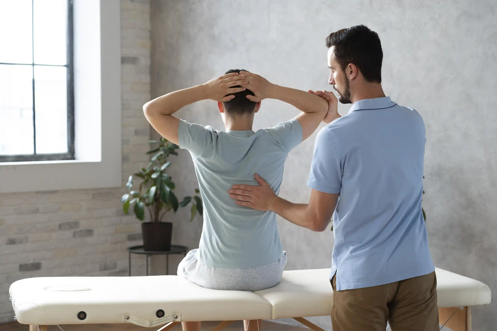

Best Physiotherapy Centre in Pune: Why Apricot Care Is the Most Trusted Choice for Patients Across the City


06
MAR
Apricot Care
Finding the right physiotherapy centre in Pune is not just about convenience or cost. It is about finding a team that truly understands your condition, listens to your concerns, and builds a recovery plan that gets you back to the life you love. With hundreds of physiotherapy clinics across the city, choosing the right one can feel overwhelming.
This guide helps you understand what to look for in a quality physiotherapy centre, what separates good care from great care, and why thousands of patients across Pune trust Apricot Care Assisted Living and Rehabilitation as their first choice for physiotherapy and neuro rehabilitation.
What Is Physiotherapy and Who Needs It
Physiotherapy is a healthcare discipline that uses movement, exercise, manual therapy, and advanced modalities to restore physical function, reduce pain, and prevent further injury. It is not just for athletes or people recovering from surgery. Physiotherapy is beneficial for a wide range of people including:
- Stroke survivors working to regain movement and independence
- Patients recovering from orthopaedic surgeries like knee or hip replacement
- People living with chronic pain conditions such as back pain, neck pain, or arthritis
- Children with cerebral palsy or developmental movement challenges
- Elderly individuals with balance problems or fall risks
- Patients with neurological conditions like Parkinson's disease or multiple sclerosis
- Working professionals dealing with posture-related pain from long hours at a desk
- Individuals recovering from road accidents or sports injuries
Whether the condition is acute or chronic, mild or complex, physiotherapy plays a central role in restoring quality of life.
What Makes a Physiotherapy Centre the Best in Pune
Not all physiotherapy clinics are created equal. Here is what genuinely separates an average clinic from the best physiotherapy centre in Pune:
Qualified and Specialised Therapists The most important factor in any physiotherapy outcome is the therapist delivering the care. Look for centres with qualified physiotherapists who hold BPTh or MPTh degrees, with additional specialisations in neurology, orthopaedics, sports rehabilitation, or paediatrics as relevant to your condition.
Multidisciplinary Care Complex conditions like stroke, spinal cord injury, or brain trauma cannot be effectively treated by physiotherapy alone. The best centres integrate physiotherapy with occupational therapy, speech therapy, psychological support, nutrition therapy, and respiratory care under one roof.
Advanced Equipment and Technology Modern physiotherapy uses technology that dramatically improves outcomes. Robotic rehabilitation, virtual reality therapy, treadmill training, laser therapy, and electrical stimulation are tools that the best centres invest in because the evidence supporting their effectiveness is strong.
Personalised Treatment Plans Generic exercise sheets are not physiotherapy. True physiotherapy involves a thorough assessment of your condition, goals, lifestyle, and physical capacity, followed by a plan that evolves as you progress.
Multiple Locations and Flexible Care Options The best physiotherapy centres in Pune make care accessible. Multiple clinic locations, home visit services, and online therapy options ensure that patients can maintain consistency in their treatment regardless of mobility challenges or busy schedules.
Patient Outcomes and Satisfaction Look for real patient testimonials and measurable outcome data. A centre that genuinely delivers results will not hesitate to share them.
Apricot Care meets every single one of these benchmarks, which is why it consistently ranks among the top choices for physiotherapy in Pune.
About Apricot Care Assisted Living and Rehabilitation
Apricot Care is Pune's leading neuro rehabilitation and physiotherapy centre, with 25 plus years of combined experience across its expert therapy team. Located in Kharadi with additional clinics in Magarpatta, Viman Nagar, Wadgaon Sheri, and Wagholi, Apricot Care makes world-class physiotherapy accessible across the city.
The centre has helped over 3,500 patients across 15 plus neurological and musculoskeletal conditions, delivering more than 18,000 therapy hours with a 96 percent client satisfaction rate.
Apricot Care is not a general physiotherapy clinic. It is a specialised rehabilitation facility that brings together a full team of physiotherapists, neuro physiotherapists, occupational therapists, speech therapists, psychologists, nutritionists, and nursing staff to deliver truly comprehensive care.
Conditions Treated at Apricot Care
Apricot Care's physiotherapy and rehabilitation services cover a broad spectrum of conditions:
Neurological Conditions Stroke recovery, Parkinson's disease, multiple sclerosis, cerebral palsy, brain injury recovery, spinal cord injury, and neuropathy are all managed through specialised neuro physiotherapy protocols.
Orthopaedic and Post-Surgical Conditions Knee replacement recovery, hip replacement rehabilitation, spine surgery recovery, fracture rehabilitation, and post-trauma care are handled with structured, progressive physiotherapy programmes.
Chronic Pain Conditions Back pain, neck pain, shoulder pain, knee pain, and joint pain are addressed through a combination of manual therapy, therapeutic exercise, and pain management modalities.
Cardiac and Oncology Rehabilitation Patients recovering from cardiac surgery or managing cancer-related fatigue and deconditioning receive specialised rehabilitation that improves strength, endurance, and quality of life.
Paediatric Conditions Children with cerebral palsy, developmental delays, or movement challenges receive gentle, age-appropriate physiotherapy designed to support their growth and independence.
Senior Care Elderly patients with fall risk, general deconditioning, post-hospitalisation weakness, or age-related mobility decline benefit from targeted senior care physiotherapy programmes.
Therapies and Techniques Offered
Apricot Care's physiotherapy team uses a wide range of evidence-based techniques and modalities:
Manual Therapy: Hands-on techniques to mobilise joints, release muscle tension, and restore range of motion. Especially effective for musculoskeletal pain and post-surgical stiffness.
Robotic Rehabilitation: State-of-the-art robotic devices assist patients in performing repetitive, high-intensity movements that rebuild motor pathways in the brain. Particularly transformative for stroke and spinal cord injury patients.
Treadmill Therapy: Body-weight supported treadmill training helps patients practise walking in a controlled environment, accelerating gait rehabilitation for neurological and orthopaedic patients alike.
Laser Therapy: Low-level laser therapy reduces inflammation, relieves pain, and promotes tissue healing. Success rate of 92 percent in pain management outcomes at Apricot Care.
Heat and Cold Therapy: Targeted thermal therapy reduces muscle spasm, decreases swelling, and prepares tissues for exercise.
Virtual Reality Therapy: VR-based rehabilitation engages patients in interactive goal-directed activities that stimulate both motor and cognitive recovery simultaneously.
Electrical Stimulation: Techniques including TENS and neuromuscular electrical stimulation are used to manage pain, reduce muscle atrophy, and re-educate muscles after neurological damage.
Sports Injury Therapy: Apricot Care has a 98 percent success rate in sports injury rehabilitation, helping athletes and active individuals return to their sport safely and quickly.
The Apricot Care Patient Experience
Walking into Apricot Care feels different from a typical physiotherapy clinic. The environment is designed to support healing, not just treatment. Here is what patients experience:
Thorough Initial Assessment Every new patient undergoes a comprehensive evaluation by a senior therapist. This covers medical history, current symptoms, functional limitations, lifestyle, and personal goals. There is no rush. Understanding you fully is the foundation of effective care.
Personalised Care Plan Based on the assessment, a detailed individualised therapy plan is created. This plan outlines specific goals, therapy techniques, expected milestones, and how progress will be measured. The plan evolves as you improve.
Consistent Therapy Team At Apricot Care, you are not passed between different therapists at every session. Consistency in your therapy relationship matters for outcomes and for trust. Our team knows your case deeply.
Family and Caregiver Involvement Families are educated, involved, and empowered. We teach home exercise programmes, transfer techniques, and what to watch for between sessions. A well-informed family is a powerful part of any patient's recovery.
24 by 7 Nursing and Support For patients staying at our assisted living facility, round-the-clock nursing support ensures safety and continuity of care at all hours.
Progress Tracking and Transparent Communication We measure your outcomes regularly and communicate progress clearly to both patients and families. You always know where you stand and what comes next.
Locations Across Pune
Apricot Care operates across five convenient locations in Pune:
Kharadi: 3rd Floor, Cherry Life, F Wing, Ganga Altus, 302, Thite Nagar, Kharadi, Pune 411014
Magarpatta, Pune
Viman Nagar, Pune
Wadgaon Sheri, Pune
Wagholi, Pune
Each location is staffed by qualified, experienced therapists and equipped with modern rehabilitation facilities. Whether you live in East Pune, Central Pune, or the outskirts, quality physiotherapy is close to you.
Online and Home Physiotherapy Services
Apricot Care understands that not every patient can visit a clinic regularly. That is why we offer:
Home Physiotherapy Visits: A qualified therapist comes to your home for hands-on sessions. Ideal for patients with mobility challenges, elderly individuals, or those recovering from surgery who need care without travel stress.
Online Therapy Sessions: Video-based consultations and guided exercise sessions are available for patients who prefer remote support or live outside Pune. Online sessions cover physiotherapy guidance, pain management advice, and rehabilitation exercise programmes.
ICU at Home: For medically complex patients who need hospital-grade care alongside rehabilitation, our ICU at home service delivers both under one coordinated programme.
What Patients Say About Apricot Care
Ravi Deshmukh, a retired banker, shared his experience after stroke rehabilitation at Apricot Care. He described losing all hope of returning to normal life after his stroke, and how the team gave him a second chance. Today he can walk again and lives independently.
Priya Nair, whose mother underwent spinal cord injury rehabilitation, praised the exceptional support her mother received, from respiratory therapy to advanced nutrition plans, and described the team's dedication as making all the difference.
Ajay Mehta, an IT professional recovering from a traumatic accident, described Apricot Care as a life-changing experience, with therapists who combined compassion and expertise to help him regain both mobility and confidence.
These are not isolated stories. They represent thousands of patients across Pune who chose Apricot Care and experienced the difference that expert, personalised, multidisciplinary rehabilitation makes.
Frequently Asked Questions
How do I know if I need physiotherapy? If you are experiencing pain, reduced mobility, weakness, balance problems, difficulty with daily activities, or are recovering from surgery, injury, or a neurological event, physiotherapy is likely beneficial. A consultation with our team will give you a clear answer and a path forward.
Do I need a doctor's referral to visit Apricot Care? No. You can book a physiotherapy consultation directly without a referral. However, if you have a recent medical report or specialist letter, please bring it as it helps our therapists understand your condition more quickly.
How many sessions will I need? This depends entirely on your condition, its severity, and your goals. Some acute conditions resolve in 6 to 8 sessions. Complex neurological rehabilitation may require months of consistent therapy. Our team will give you a realistic timeline after your initial assessment.
Is physiotherapy painful? Good physiotherapy should never cause unnecessary pain. Some treatment techniques can involve temporary discomfort, particularly when working on stiff joints or scar tissue, but our therapists always work within your comfort levels and explain every step.
Can elderly patients undergo physiotherapy? Absolutely. Physiotherapy is extremely beneficial for elderly patients. Our senior care programme is specifically designed to improve strength, balance, and independence while being sensitive to the physical limitations that come with age.
Does Apricot Care treat children? Yes. We treat children with cerebral palsy, developmental delays, and other movement-related conditions through age-appropriate, gentle physiotherapy programmes.
Conclusion: Your Recovery Deserves the Best
Physiotherapy is one of the most powerful tools in modern healthcare. But its effectiveness depends entirely on the quality of the people delivering it and the environment they create. At Apricot Care Assisted Living and Rehabilitation, we bring together qualified specialists, advanced technology, a warm patient-focused environment, and a genuine commitment to your recovery.
With five clinic locations across Pune, home care services, online therapy options, and a team that has helped over 3,500 patients rebuild their lives, Apricot Care stands as the most trusted name in physiotherapy and neuro rehabilitation in Pune.
Your recovery journey deserves the best start. Book your consultation with Apricot Care today.
Call us at 7387641462 or email hello@apricotcare.in to get started.
Medical Disclaimer: This article is intended for informational purposes only and does not constitute medical advice. Please consult a qualified physiotherapist or healthcare professional for personalised guidance regarding your specific condition.